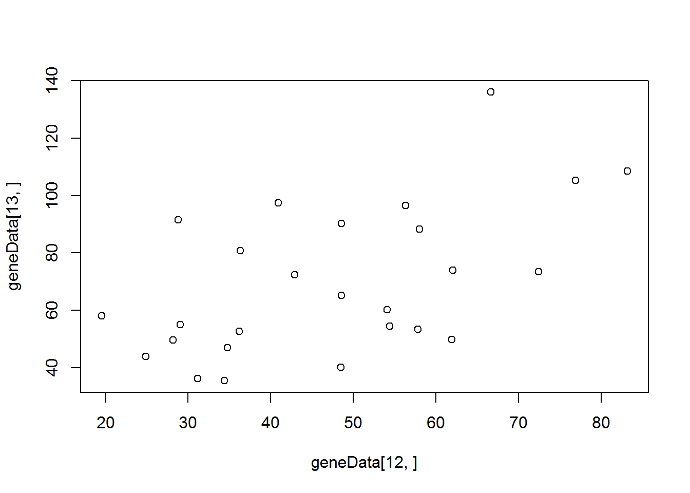
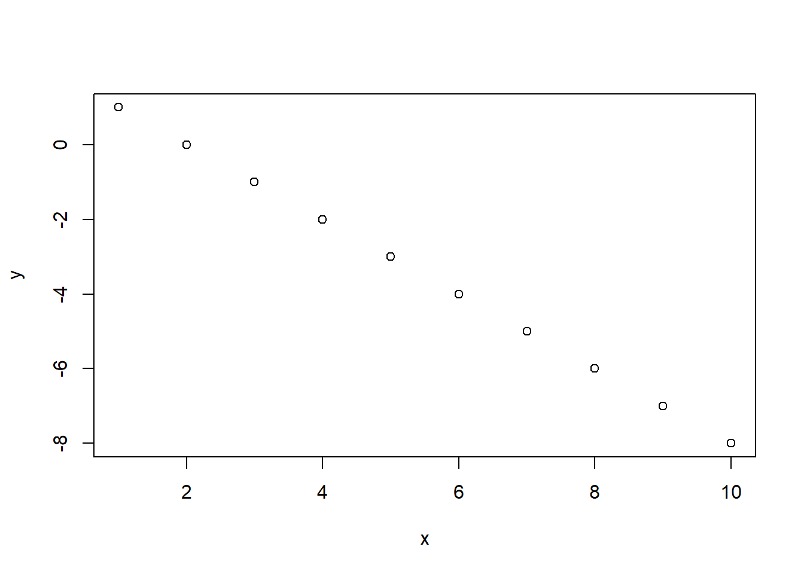
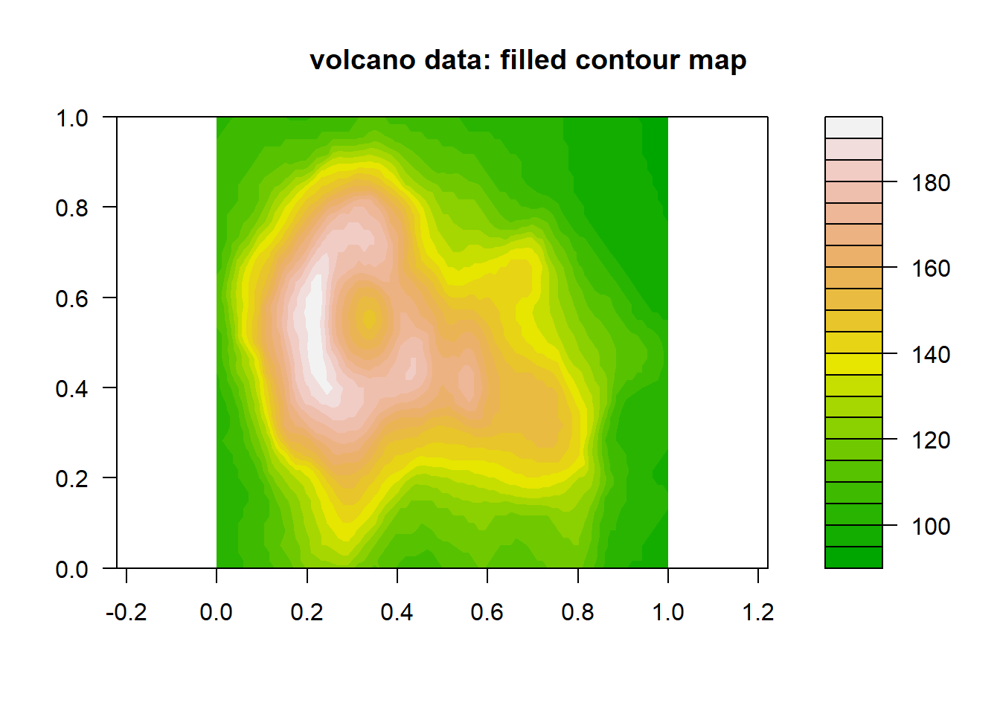

Click here to download the script! Save the script to your working directory (R Project directory).
Load your script in your RStudio Project. To do this, open your RStudio Project and click on the folder icon in the toolbar at the top and load your script.
Let’s get started with basic programming in R!
One quick note: this submodule primarily uses base R instead
of the tidyverse. You’ll notice that we use the plot()
function, which is R’s built in plotting functionality. This is less
sophisticated than ggplot in many ways, and is much harder to use for
quick data visualizations, but it’s still useful to know how to use
it…
Everything in R can be boiled down to this: data are expressed as vectors, and data objects are managed, manipulated, and visualized via functions. Functions are absolutely central!
Let’s start with a blank workspace:
# Start with blank workspace -------------------
rm(list=ls())Base R already includes lots of functions, and thousands more functions are available in packages that you can install. Nonetheless, it’s really useful to know how to write your own functions! For example, we might write our own function if we have to repeat certain sets of operations over and over in different contexts.
We use the following syntax when we are writing our own functions:
my.function <- function(input1,input2,...){ # function takes various arguments (inputs)
## [Algorithm goes here: Do something useful with the inputs]
return(output) # return some output
}
Let’s write a function to compute the mean of a numeric vector. Okay fine, base R already has the “mean()” function, but let’s do it anyway!
## We can write our own functions. Useful if we have to repeat the same operations over and over with different inputs.
my.mean <- function(x){ # 'x' is the function argument- 'x' stands in for whatever numeric vector the user wants
m <- sum(x)/length(x)
return(m)
}
foo <- c(2, 4, 6, 8)
my.mean(foo)## [1] 5Here, the variable “x” stands in for any possible numeric vector. The function takes the user input, names it “x” (within the function environment), computes a new scalar variable “m” that represents the mean of the vector “x”, and returns the variable “m”.
How about a function to square its arguments?
## A function to square the arguments.
square <- function(x){
x^2
}
## Square a single value (scalar).
square(2)## [1] 4## Square all elements of a vector.
square(1:10)## [1] 1 4 9 16 25 36 49 64 81 100If there is no explicit return function, the function
will return the output of the last command (line of code) within the
function.
The logit operation (log-odds) is often used for working with probabilities. Let’s write it ourselves!
## Often, we need to write functions that are not included in the base R package e.g., the logit function.
## Calculate the log-odds (logit).
logit <- function(x){
log(x/(1-x))
}
## Calculate logit of 0.9.
logit(.9)## [1] 2.197225## Sequence between 0 and 1.
x <- seq(from = 0, to = 1, by = 0.01)
## Caclulate the logit of a vector.
logit.x <- logit(x)
logit.x## [1] -Inf -4.59511985 -3.89182030 -3.47609869 -3.17805383 -2.94443898
## [7] -2.75153531 -2.58668934 -2.44234704 -2.31363493 -2.19722458 -2.09074110
## [13] -1.99243016 -1.90095876 -1.81528997 -1.73460106 -1.65822808 -1.58562726
## [19] -1.51634749 -1.45001018 -1.38629436 -1.32492541 -1.26566637 -1.20831121
## [25] -1.15267951 -1.09861229 -1.04596856 -0.99462258 -0.94446161 -0.89538405
## [31] -0.84729786 -0.80011930 -0.75377180 -0.70818506 -0.66329422 -0.61903921
## [37] -0.57536414 -0.53221681 -0.48954823 -0.44731222 -0.40546511 -0.36396538
## [43] -0.32277339 -0.28185115 -0.24116206 -0.20067070 -0.16034265 -0.12014431
## [49] -0.08004271 -0.04000533 0.00000000 0.04000533 0.08004271 0.12014431
## [55] 0.16034265 0.20067070 0.24116206 0.28185115 0.32277339 0.36396538
## [61] 0.40546511 0.44731222 0.48954823 0.53221681 0.57536414 0.61903921
## [67] 0.66329422 0.70818506 0.75377180 0.80011930 0.84729786 0.89538405
## [73] 0.94446161 0.99462258 1.04596856 1.09861229 1.15267951 1.20831121
## [79] 1.26566637 1.32492541 1.38629436 1.45001018 1.51634749 1.58562726
## [85] 1.65822808 1.73460106 1.81528997 1.90095876 1.99243016 2.09074110
## [91] 2.19722458 2.31363493 2.44234704 2.58668934 2.75153531 2.94443898
## [97] 3.17805383 3.47609869 3.89182030 4.59511985 Inf## Plot x on x-axis, and logit(x) on y axis.
plot(x, logit.x, type = 'l',xlab="x",ylab="logit(x)") # View the output graphically.
Conditional, or logical, operations (IF [condition] THEN [do something] ELSE [do something]) are a basic building block of computer programming.
The basic syntax for if…else statements in R is as follows:
if([some condition]){ ## if some condition is met
[execute some commands]
}else if ([some other condition]){ ## if some other condition is met (often this clause is not necessary)
[execute some other commands]
}else{ ## if none of the above conditions are met (otherwise...)
[execute some other commands]
}
NOTE: you can include any number of nested “else if(…)” statements- or you can omit these entirely!
Let’s try it!
# if...else statements -----------------------
# Draw a sample from a Binomial distribution with p = 0.7 (here, p represents detection probability).
p <- 0.7 # probability of detection
x <- rbinom(n = 1, size = 1, prob = p) # single 'coin flip' with prob success equal to p
if (x > 0) {
print("detected")
} else {
print("not detected")
}## [1] "detected"Note that “if…else” only works for testing one condition at a time. If we have a vector with lots of data, we need something else – something “vectorized” – like the “ifelse()” function:
# ifelse() --------------------------------
## Note if...else only works for running one logical (T/F) test at a time. If we have a spreadsheet with lots of data, we need something else.
n.samples <- 100
## 100 samples from a binomial distribution with detection probability p = 0.7.
y <- rbinom(n = n.samples, size = 1, prob = p)
y## [1] 0 1 1 1 0 1 1 1 1 1 0 1 1 0 0 1 1 0 0 1 1 1 1 1 1 1 1 1 1 1 1 0 1 1 0 1 1
## [38] 0 1 1 1 1 0 1 1 1 0 0 1 0 1 0 0 1 0 1 0 1 1 1 1 0 1 0 1 1 1 1 1 1 1 1 1 1
## [75] 1 0 1 1 0 0 1 1 1 0 0 1 1 1 1 1 1 0 0 1 1 1 1 0 0 1## Use ifelse d
detection.history <- ifelse(y == 1, "Detected", "Not detected")
detection.history## [1] "Not detected" "Detected" "Detected" "Detected" "Not detected"
## [6] "Detected" "Detected" "Detected" "Detected" "Detected"
## [11] "Not detected" "Detected" "Detected" "Not detected" "Not detected"
## [16] "Detected" "Detected" "Not detected" "Not detected" "Detected"
## [21] "Detected" "Detected" "Detected" "Detected" "Detected"
## [26] "Detected" "Detected" "Detected" "Detected" "Detected"
## [31] "Detected" "Not detected" "Detected" "Detected" "Not detected"
## [36] "Detected" "Detected" "Not detected" "Detected" "Detected"
## [41] "Detected" "Detected" "Not detected" "Detected" "Detected"
## [46] "Detected" "Not detected" "Not detected" "Detected" "Not detected"
## [51] "Detected" "Not detected" "Not detected" "Detected" "Not detected"
## [56] "Detected" "Not detected" "Detected" "Detected" "Detected"
## [61] "Detected" "Not detected" "Detected" "Not detected" "Detected"
## [66] "Detected" "Detected" "Detected" "Detected" "Detected"
## [71] "Detected" "Detected" "Detected" "Detected" "Detected"
## [76] "Not detected" "Detected" "Detected" "Not detected" "Not detected"
## [81] "Detected" "Detected" "Detected" "Not detected" "Not detected"
## [86] "Detected" "Detected" "Detected" "Detected" "Detected"
## [91] "Detected" "Not detected" "Not detected" "Detected" "Detected"
## [96] "Detected" "Detected" "Not detected" "Not detected" "Detected"## Going the other direction.
ifelse(detection.history == "Detected", 1, 0)## [1] 0 1 1 1 0 1 1 1 1 1 0 1 1 0 0 1 1 0 0 1 1 1 1 1 1 1 1 1 1 1 1 0 1 1 0 1 1
## [38] 0 1 1 1 1 0 1 1 1 0 0 1 0 1 0 0 1 0 1 0 1 1 1 1 0 1 0 1 1 1 1 1 1 1 1 1 1
## [75] 1 0 1 1 0 0 1 1 1 0 0 1 1 1 1 1 1 0 0 1 1 1 1 0 0 1xt <- cbind(rbinom(10, 1, .5), rbinom(10, 1, .6))
xt## [,1] [,2]
## [1,] 1 0
## [2,] 0 1
## [3,] 1 1
## [4,] 1 1
## [5,] 0 1
## [6,] 1 1
## [7,] 0 1
## [8,] 1 1
## [9,] 0 0
## [10,] 0 0ifelse(xt[, 1] > 0 & xt[, 2] > 0, "Detected twice",
"Not detected twice")## [1] "Not detected twice" "Not detected twice" "Detected twice"
## [4] "Detected twice" "Not detected twice" "Detected twice"
## [7] "Not detected twice" "Detected twice" "Not detected twice"
## [10] "Not detected twice"Iterating, or running the same operation over and over sequentially, is another fundamental computer programming tool. Computers are great at performing multiple computations really, really fast! Loops are a good way to take advantage of computers!
The basic syntax for iterating in R is called a “FOR loop”, and looks like this:
for([iteration variable] in [iteration vector of length x]){
[perform specified operation(s) x times, with the iteration variable set at each value of the iteration vector in succession]
}
For example…
# for loops --------------------------
for(i in 1:10){
print(i)
}## [1] 1
## [1] 2
## [1] 3
## [1] 4
## [1] 5
## [1] 6
## [1] 7
## [1] 8
## [1] 9
## [1] 10for(j in c(2,4,6,8,10)){
print(j)
}## [1] 2
## [1] 4
## [1] 6
## [1] 8
## [1] 10n.iter <- 10 # another alternative!
count <- 0
for(i in 1:n.iter){
count <- count+1 # assign a new value of count equal to the old value of count plus 1
print(count)
}## [1] 1
## [1] 2
## [1] 3
## [1] 4
## [1] 5
## [1] 6
## [1] 7
## [1] 8
## [1] 9
## [1] 10Take the first FOR loop above. Here, “i” is the iteration variable and “1:n.iter” is the iteration vector:
# closer look at iteration vector:
1:n.iter## [1] 1 2 3 4 5 6 7 8 9 10Essentially, R starts this FOR loop by setting the value of the placeholder iteration variable “i” to the first value of the iteration vector (i.e., the value 1). It then runs the two commands in the body of the for loop [count <- count+1; print(count)]. Then, it sets the iteration variable “i” to the next value in the iteration vector (i.e., the value 2) and runs the commands again. It keeps doing this until it reaches the end of the iteration vector, at which point it stops!
It is often useful to reference the iteration variable directly within the FOR loop. Here are some examples:
## A for-loop for dependent sequence (here, the Fibonacci sequence)
n.iter <- 10
x <- rep(0, n.iter) # set up vector of all zeros
x[1] <- 1 # assign x_1 <- 1
x[2] <- 1 # assign x_2 = 0
for(i in 3:n.iter){
x[i] <- x[i-1]+x[i-2] # x_i = x_(i-1) + x_(i-2)
}
x## [1] 1 1 2 3 5 8 13 21 34 55### apply (another way to iterate) ------------------
W <- matrix(rnorm(4, 10, 3), nrow = 2, ncol = 2) # Create a 2X2 matrix using a Normal random number generator with mu=10 and sd=3
W## [,1] [,2]
## [1,] 6.056728 5.469694
## [2,] 7.612264 7.514397## For each row, calculate the mean.
apply(W, 1, mean)## [1] 5.763211 7.563330## For each column, calculate the mean.
apply(W, 2, mean)## [1] 6.834496 6.492046## Apply your own custom function to each row in a matrix.
MyFunc <- function(x){
2+sum(x/5)-3/2*mean(x)^2
}
apply(W, 1, MyFunc)## [1] -45.51662 -80.78062# lapply: apply a function across a list or vector --------------
# apply the "exp()" function to each element in the vector 1:5
lapply(1:5,function(x) exp(x)) ## [[1]]
## [1] 2.718282
##
## [[2]]
## [1] 7.389056
##
## [[3]]
## [1] 20.08554
##
## [[4]]
## [1] 54.59815
##
## [[5]]
## [1] 148.4132# compute the square root of volume for the first five trees in the 'trees' dataset
lapply(1:5, function(t) sqrt(trees$Volume[t]))## [[1]]
## [1] 3.209361
##
## [[2]]
## [1] 3.209361
##
## [[3]]
## [1] 3.193744
##
## [[4]]
## [1] 4.049691
##
## [[5]]
## [1] 4.335897# sapply: same thing as 'lapply' but simplifies the returned object (i.e., into a vector if the function returns a scalar...)
mylist <- list()
mylist[[1]] <- seq(1,5,length=10)
mylist[[2]] <- c(1,.5,-.4)
mylist[[3]] <- matrix(rnorm(12,10,3),nrow=3)
sapply(mylist,function(x) sum(x)) ## [1] 30.0000 1.1000 113.3849plot() function) to plot the results.Your result should look something like this:

If you apply this loop to the following vector “x”:
x=c(5,4,7,3,10,2,5,4,7,6)You should get the following result:
## [1] 5.000000 4.500000 5.333333 4.750000 5.800000 5.166667 5.142857 5.000000
## [9] 5.222222 5.300000Here’s a quick look at the volcano dataset:
filled.contour(volcano, color.palette = terrain.colors, asp = 1)
title(main = "volcano data: filled contour map")
# CHALLENGE EXERCISES -------------------------------------
#1: Create a custom function to calculate the predicted value y
# for the equation y = beta_0 + beta_1*x for any value of
# beta_0, beta_1 and x. Assume that beta_0 and
# beta_1 are both scalar, whereas x is a numeric vector.
# Use this function to calculate y for the values of
# $x$ = 1,...,10 with $\beta_0 = 2$, and $\beta_1= -1$.
# Use base R plotting (`plot()` function) to plot the results.
#
#2: Write a FOR loop that takes a numeric vector as input and
# computes the cumulative mean (for each element of the vector,
# compute the mean of all previous elements of the vector,
# including the current element).
#
#3: Using the built-in 'volcano' dataset (a matrix of elevation data
# with columns representing longitude and rows representing latitude),
# calculate the standard deviation of elevation as an index of
# 'ruggedness' from the rows () of the volcano elevation data matrix.
# Using the "apply()" function. Which row (latitude band) of the
# 'volcano' dataset has the most rugged terrain?